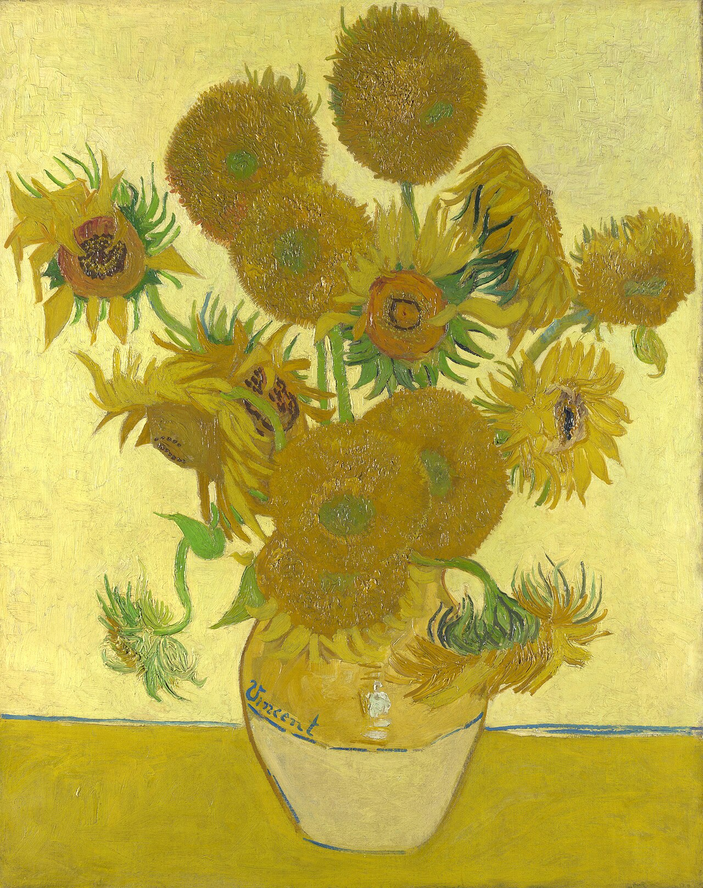

| Biography | ||
|---|---|---|
|
|
Born | 30 March 1853, Zundert, North Brabant, Netherlands |
| Died | 29 July 1890 (aged 37) Auvers-sur-Oise, Val-d'Oise, France | |
| Cause of death | Self-inflicted gunshot wound to the chest | |
| Education | Royal Academy of Fine Arts, Académie Royale des Beaux-Arts | |
| Years active | 1881-1890 | |
| Movement | Post-Impressionism | |
Vincent van Gogh (1853-1890) was a Dutch Post-Impressionist painter and one of the most influential artists in modern history. Born in the Netherlands, he worked as an art dealer, teacher, and missionary before becoming a full-time artist in his late twenties. Although he struggled with poverty and mental health problems throughout his life, he produced around 900 paintings, including famous works such as The Starry Night, Sunflowers, and Irises. His distinctive style, characterized by vivid colors, bold brushstrokes, and emotional expression, had a major influence on modern art. Van Gogh died in France at the age of 37, and although he achieved little commercial success during his lifetime, his work became internationally celebrated after his death.
Vincent van Gogh did not become a painter overnight. Before dedicating his life to art, he experienced several different careers and went through many personal struggles. His journey to becoming a painter was gradual, shaped by his passion for art, self-study, and years of practice.
Vincent van Gogh's artworks became famous for several reasons. His paintings are known for their bold colors, expressive brushstrokes, and unique style, which allowed him to express deep emotions through art. He often used bright colors and swirling patterns to represent his feelings and the world around him. His personal struggles and life experiences also influenced his artwork, making his paintings emotionally powerful and meaningful. Although he received little recognition during his lifetime, his works gained popularity after his death because of their originality and influence on modern art. Today, paintings such as The Starry Night, Sunflowers, and Irises are celebrated worldwide for their beauty, creativity, and emotional depth.

A Wheat Field with Crows

Bedroom in Arles

Sunflowers

Starry Night

At Eternity's Gate